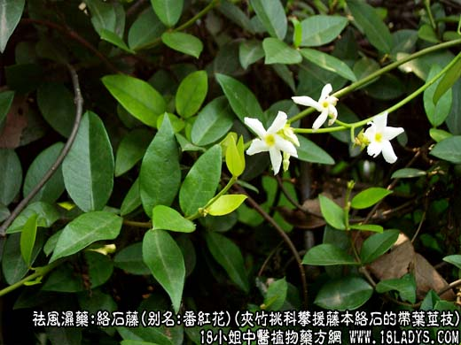
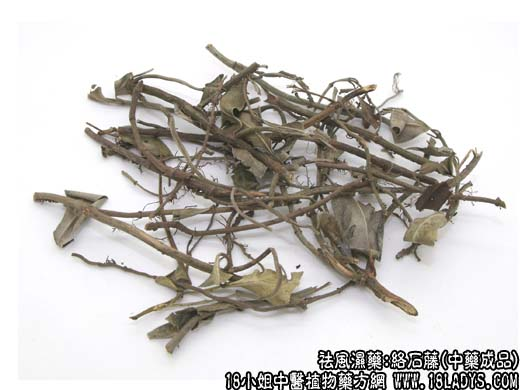
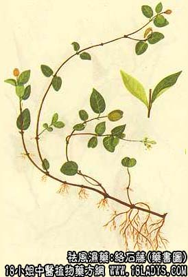

来源：络石藤为常用中药，《神农本草经》列为上品。
1、为桑科常绿攀援植物薛荔的带叶不育幼枝。
2、夹竹桃科常绿攀援木质藤本植物络石的带叶茎枝（白花藤）。
产地：两种络石藤均产于华东、中南、四川等地。
性状鉴别：1、薛荔络石藤：茎枝呈圆柱形，细长而弯曲，直径1~5毫米，有分枝。表面棕褐色，节处附近有攀援根及点状突起的根痕。断面髓部呈圆点状，偏于一侧。叶互生，或已脱落，叶片椭圆形，革质，棕绿色或黄褐色，全缘；下表面叶脉网状凸起，形成许多小凹窝，气微味淡。
2、白花络石藤：茎枝圆柱形，弯曲，有分枝，直径1~5毫米，表面棕褐色，散生攀援根及点状态突起的根痕。叶对生，多已脱落。叶片长卵圆形，淡黄绿色，厚纸质。气微味苦。
两种络石藤的区别：
桑科薛荔石藤 白花络石藤 1、细长、弯曲，棕黄色。 同。 具攀援根（或根痕）。 同，但少。 茎断面黄褐色，髓部偏心。 断面黄白色，髓位于中央。 叶互生（看叶痕）叶椭圆形，先端钝，革质，背面侧脉显蜂窝型。 叶对生，长卵形，先端尖，厚纸质。 味淡。 味苦。两种均以茎细、均匀、带叶者为佳。
主要成分：络石含络石甙等。
功效与作用：1、祛风通络，可能由于所含的微量强心甙能促进血循环而起作用；
2、凉血消痈：现已证明有抗菌作用，能抑制金黄色葡萄球菌。
炮制：切咀，生用。
性味：苦，微寒。
归经：入心、肝、肾三经。
功能：祛风散热，活血通络。
主治：风湿痹痛，喉痹，痈肿。
注：除上列二种外，少数地区又用茜草科穿根藤、豆科山鸡血藤、卫矛科扶芳藤、葡萄科爬山虎作络石藤用，地产地销。
临床应用：1、用于治疗风湿关节炎、肌肉痛，特别是伴有四肢拘挛，屈伸不便者。常配千年健，桂枝、桑寄生、独活等，浸酒用较好，也可水煎服。
2、用于治疗痈疽和咽喉疼痛，尤其扁桃体炎、咽炎，取其有抗菌作用，常配射干、桔梗等，方如络石汤。
使用注意：阳虚胃寒、大便便溏者不宜服，孕妇慎用。
用量：6~15g，不宜多服。